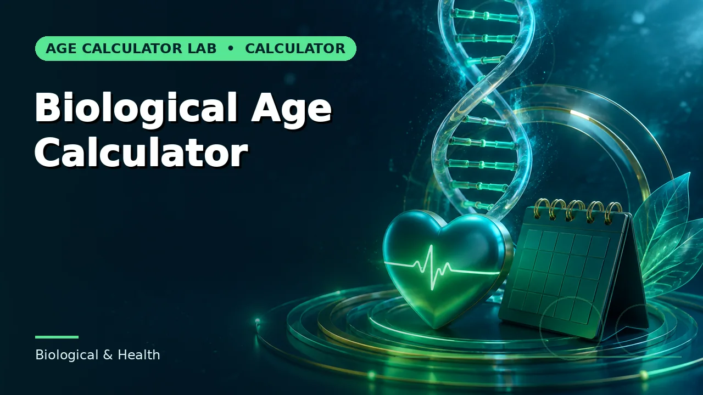
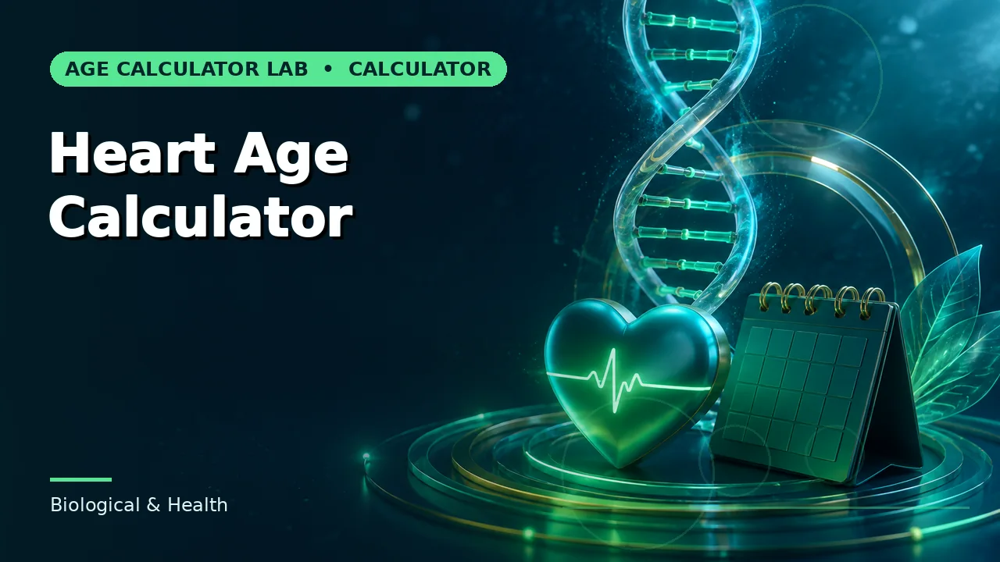
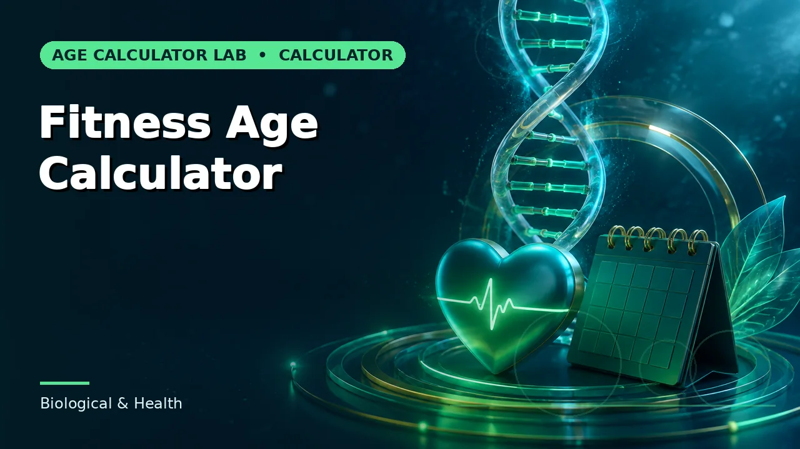
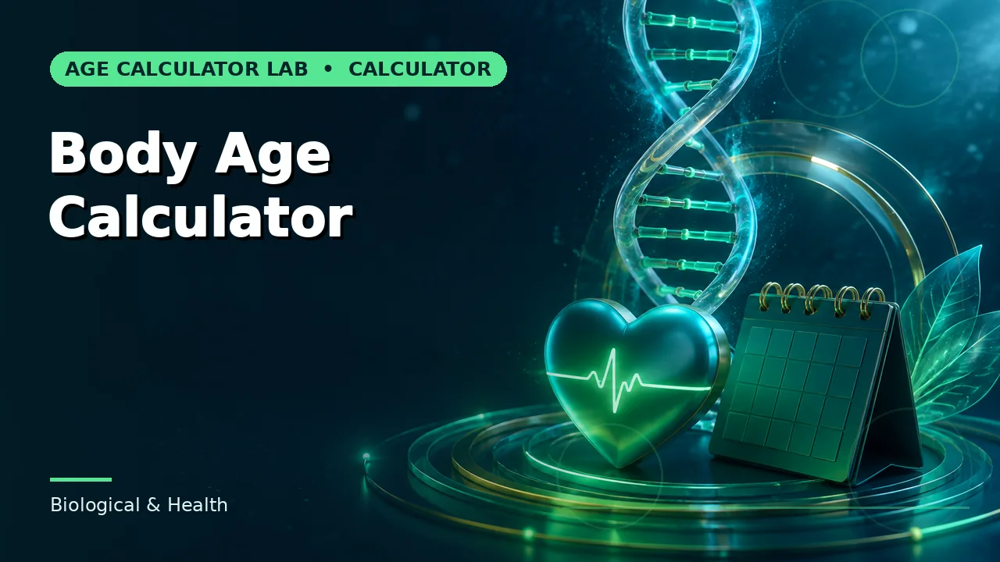
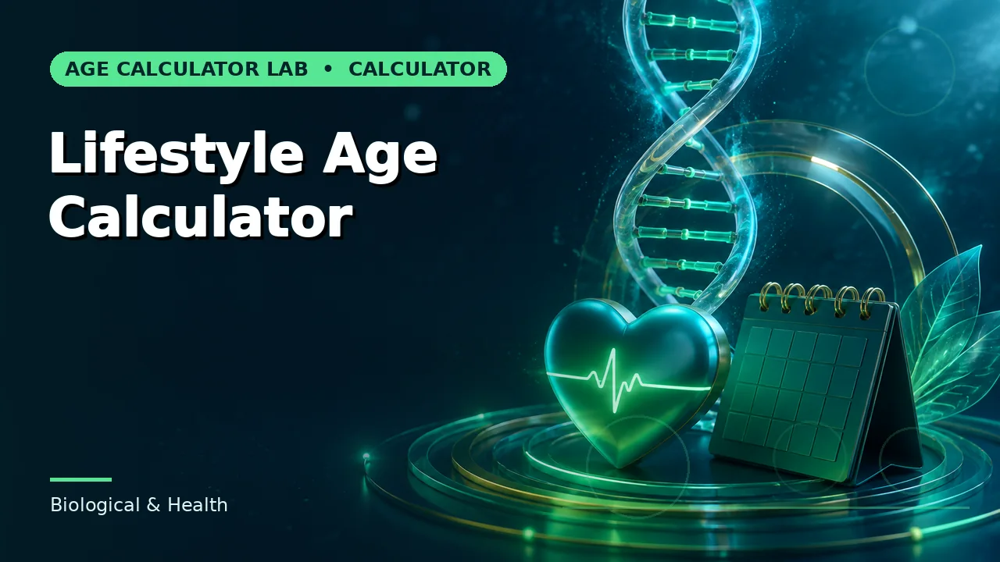

Biological & Health
Educational lifestyle-adjusted age estimates. These are illustrative models, not clinical measurements.

Biological Age Calculator
A non-diagnostic wellness-age estimate based on lifestyle inputs.

Heart Age Calculator
An educational heart-health age index using simple risk-related inputs.
Metabolic Age Calculator
An educational metabolic-age comparison based on basic body and activity inputs.

Fitness Age Calculator
A lifestyle-oriented fitness age estimate for self-reflection.

Body Age Calculator
A general body-age index derived from age and lifestyle markers.
Health Age Calculator
A broad wellness-age estimate that highlights modifiable lifestyle factors.
Brain Age Calculator
A recreational cognitive-lifestyle age estimate rather than a diagnostic result.

Lifestyle Age Calculator
An educational age adjustment based on sleep activity and smoking status.
Browse the rest of the 161 calculators
Ten more groups covering assessments, pregnancy, work, dates and cultural references.